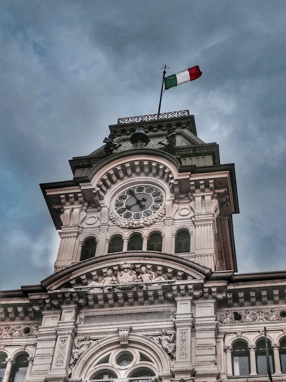

Photo by Francesca Tosolini
In Italy, these are the days during which stores, post offices, schools as well as banks are closed, while public transportation is minimized. Keep this in mind in order to avoid inconvenient situations.
New Year’s day (Capodanno): as in the States, the 1st of January is a holiday. Epiphany (Epifania): this is celebrated on January 6th every year. It is a religious holiday and it corresponds to the presentation of baby Jesus to the Three Wise Men. It is observed in the schools: while American kids return to school on January 2nd, Italians kids do it on January 7th. Some stores and banks may be closed as well. Easter (Pasqua): the Easter Sunday changes from one year to the next. This day is the same both in the States and Italy. It is celebrated with family or friends: there’s a saying that goes “Natale con i tuoi, Pasqua con chi vuoi”, which means celebrate Christmas with your family, and Easter with whoever you want. The Day after Easter (Lunedi dell’angelo or Pasquetta): it is the Monday following Easter Sunday and is also an observed holiday in which many businesses and all public offices are closed. Many Italians spend this day outdoor, picnicking together to welcome the spring. Liberation Day (Giorno della liberazione): this holiday commemorates the day Italy was freed from the Nazi-Fascism. It is celebrated every year on April 25th. Labor Day (Festa del Lavoro): on May 1st, every year. Italian Republic Day (Festa della Repubblica): in 1946 Italy had to decide whether to remain a monarchy or become a republic. On June 2, 1946 Italy decided to become a republic. This holiday is celebrated every year on June 2nd. Assumption (Assunzione): this is the holiday celebrating Mary, Mother of Jesus. It is observed every year on August 15th. This festivity very much reminds me of the American 4th of July, since friends and family gather together to enjoy the outdoor and the late night fireworks (Late equals 11:45pm in Italy…). All Saints’ Day (Ognissanti): every year on November 1st. On this day Italians bring flowers to the graves of their deceased loved ones, even though November the 2nd is the “official” Day of the Dead (giorno dei morti). Immaculate Conception (Immacolata concezione): this is another holiday dedicated to Mary and her freedom from sin. It is observed every year on December 8th. Christmas (Natale): observed every year on December 25th. St. Stephen's Day (Giorno di Santo Stefano): this is the day after Christmas. Unlike in the States, on December 26th all stores and banks are closed. While Americans do their shopping, Italians eat another Christmas meal... {This is an excerpt from chapter 13 “National holidays” of the eBook “Italy from the Inside. A native Italian reveals the secrets of traveling in Italy”}